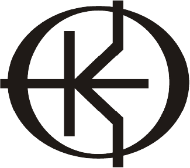

- Lingkaran dalam, melambangkan persatuan dan kesetaraan mahasiswa Ilmu Komputer.
-
Elips pada bagian luar, melambangkan himpunan mahasiswa Ilmu Komputer yang mengalami pelebaran ke Kiri
dan Kanan. Pelebaran ke kiri merupakan persatuan mahasiswa dengan calon mahasiswa Ilmu komputer, sedangkan pelebaran ke kanan merupakan persatuan mahasiswa dengan alumni.
- Huruf K memiliki arti komputer.
- Garis lurus mendatar melambangkan input dari calon mahasiswa ilmu komputer.
- Garis keluar ke atas menciptakan suatu terobosan yang bertujuan membantu pemerintahan.
- Garis keluar ke bawah melambangkan suatu pengabdian kepada masyarakat.
- Warna Hitam: melambangkan solidaritas, ketegasan dan bisa menyerap seluruh aspirasi.